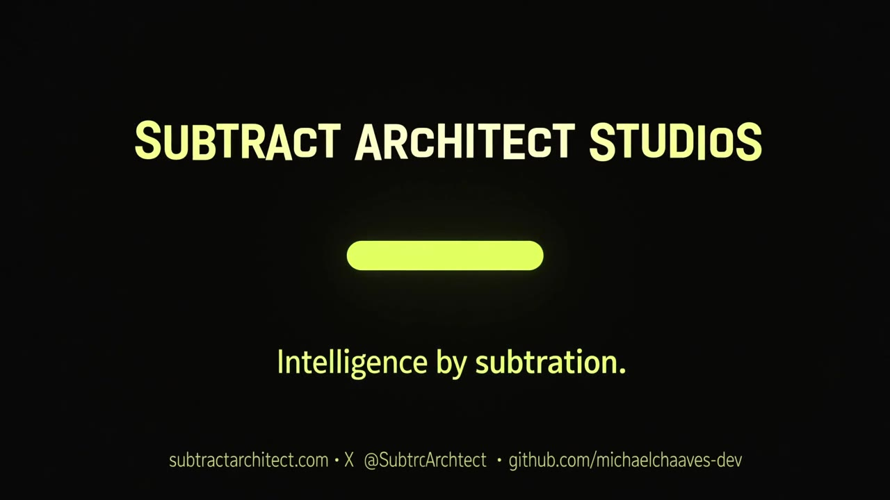

Compliance Monitoring
Vendor verification, licensing, insurance tracking, regulatory updates, and ongoing monitoring.

Intelligence by Subtraction.
Subtract Architect Studios helps businesses reduce costs, eliminate unnecessary work, improve operations, and implement practical technology solutions.
From continuous vendor compliance monitoring and property management to skilled trades, office automation, and AI cost optimization, we build solutions around your business—not the other way around.
Vendor verification, licensing, insurance tracking, regulatory updates, and ongoing monitoring.
Tenant communications, maintenance coordination, vendor management, and administrative assistance.
Scheduling, estimates, work orders, project tracking, and customer communications.
Document processing, scheduling, reporting, customer service, and repetitive task automation.
Reduce unnecessary AI spending, optimize model routing, eliminate redundant processes, and improve efficiency.
Practical software, AI integration, and workflow improvements designed around individual business needs.
Constitutional AI operating-system root: governance, orchestration and reusable system architecture.
Production-oriented bellaOS surface and deployment lineage.
Agent orchestration and control-plane layer with governance, memory and skills.
Permissioned coordination bus separating messages from command authority.
Public pointer and lineage surface for the Sentinel/bellaOS reasoning stack.
Human-to-agent control plane with authority tiers, adapters and auditable execution.
Persistent memory service for agents and applications with API-backed storage.
Memory conservation, deduplication, compact state and provenance-aware persistence.
Compact semantic intermediate representation for instructions, state and agent communication.
Companion operating-system lineage for education and guided learning systems.
Retrieval and self-learning architecture for the Zali ecosystem.
Layered small-model / cache / consult routing demonstration.
Mobile-first personal operator dashboard with reminders, agent assistance and privacy controls.
Sanitized coordination bus for Sparks workflows across a privacy boundary.
Model routing, context optimization, PII preprocessing, budgets, fallback and cost receipts.
Operator and market-analysis command-center lineage for SubtracToken.
Flagship AI Inference Market system for model economics, routing and market intelligence.
Compute-unit economics, governance, ledger and verification research lineage.
Earlier web repository in the AI Inference Market lineage.
Compute-unit monetary and accounting engine research.
DeFi analysis terminal combining LLM routing, data services, authentication and persistence.
Public inference-cost and savings dashboard demonstration.
Deployment simulator for comparing AI routing, cost and architecture tradeoffs.
Proactive interception, quarantine and human-review gate for risky links, files and attachments.
Trust-boundary, least-privilege, crypto-agility and rollback assurance architecture.
Integrity layer for claim-state tracking, failure-pattern subtraction and response routing.
Canonical Sentinel doctrine, RAG corpus, architecture and method lineage.
Focused breach-detection security utility.
Experimental sandbox for QST-inspired security controls.
Defensive cyber-range simulator and training lineage.
Evidence registry for frontier-model failures, mitigations and regression patterns.
Archived Virtual Hyper-lattice Security architecture and defensive-gate predecessor.
Core Quantum Subtraction Theory research, protocols, benchmarks and implementation standards.
Testing ground for QST and subtractive-computation experiments.
High-performance N-body simulation with subtractive pruning telemetry.
Interactive N-body Quantum Subtraction laboratory.
Quantum Ghost / subtraction research archive and cipher lineage.
Experimental ternary {-1, 0, +1}, Step-0 and field-simulation research.
Interactive orbital / galactic trajectory simulation and education project.
Research home for mathematics, exact-search and experimental science tracks.
Large proving-ground corpus spanning routers, prototypes, doctrine and test artifacts.
Proof-before-promotion code review and idea-ledger workflow.
Bounded continuous-improvement ledger for evidence-backed methodology refinement.
Residential portfolio analysis product focused on rent-roll and revenue-leakage review.
Multi-state New England landlord-tenant compliance knowledge repository.
Administrative, receptionist, supervisor and property-operations assistant lineage.
General-contractor project operations, reporting and field-work application lineage.
Human-centered habit-awareness and behavior-change application concept.
Small-town travel, trip-planning and local discovery application.
Safety and prevention intelligence logic with training and group-state analysis.
Camera/operator visualization and labeling layer paired with Horus.
Project-based youth technology, AI, robotics and systems-learning initiative.
Multilingual technology-learning program and site/application source.
Evidence-oriented AI and science education / publication program.
Plain-language explain-and-show learning series across technology and practical life topics.
Future-facing digital almanac and educational data concept.
Evidence-tagged medical and science innovation research ledger; not medical advice.
AI newsletter and local/small-business publication system.
Digital publication and delivery prototype lineage.
Public-camera ingestion, metadata and fusion-ready data architecture in the ATLAS lineage.
Public ATLAS SkyMap / UAP register preview and exploration surface.
Private master inventory for prototypes, MVPs, proofs of work and source intake.
Studio intellectual-property catalog and indexing repository.
Public directory for methods, dashboards, systems and software concepts.
Founder and company portfolio narrative spanning consulting, research and education.
Public website source repository for Subtract Architect Studios.
Advocacy-oriented development and prototype lineage.
Coordination / Commons companion repository for Advo Dev.
Owner-approval social media manager foundation with allowlists and publishing gates.
Private experimental project retained in the studio portfolio; deeper public classification pending.
No repositories match that search or filter.
Tell us what's costing you time, money, or unnecessary work. We'll help identify opportunities for improvement.
This page has no form server. Submitting opens an email to founder@SubtractArchitect.com in your mail app, with the fields below already filled in.